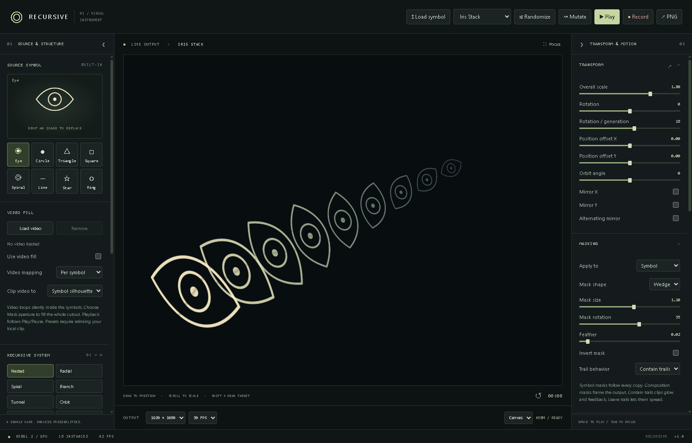
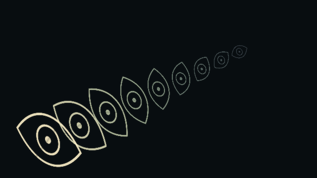
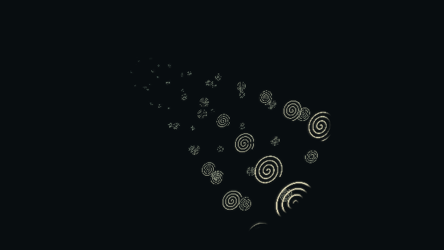
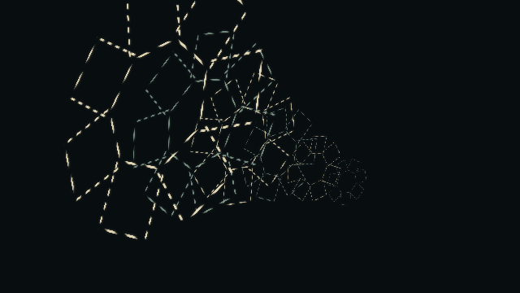

A machine by Travers MacMaster
Recursive
Recursive is a standalone GPU visual instrument for building nested, radial, spiral, branching, tunnel, orbit, grid and cascading compositions from a symbol. Cut symbols or the whole composition with procedural masks, fill them with looping video, and separate generations into 3D depth layers with camera controls. Shape motion, color and feedback, then export a PNG or record the result.
This instrument is not currently available to open on the web.
All machines
Getting started
What it does
- 01Load an image or choose from eight built-in symbols
- 02Eight recursive layouts with depth, copies and scale falloff controls
- 03Circle, box, wedge and stripe masks with feathering and inversion
- 04Apply masks to individual symbols or the whole composition; contain or leave feedback trails
- 05Loop video inside symbol silhouettes or mask apertures, per symbol or across the output
- 063D depth layers with camera yaw, pitch, perspective and orbit
- 07Animation, modulation, color grading and feedback controls
- 08Save and load presets; relink local video clips when reopening
- 09PNG export and canvas or window recording; video fills play silently
Output examples






From the same studio